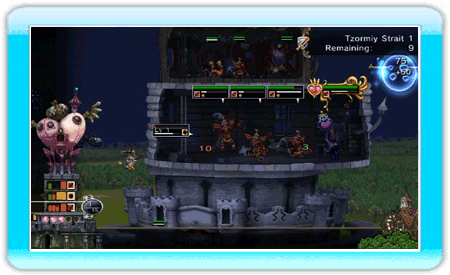
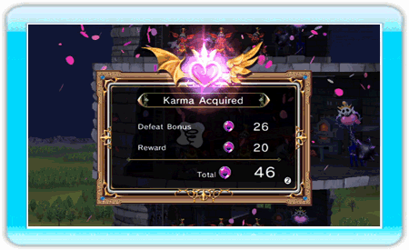

10 |
À la conquête du monde |
 |
L'univers de My Life as a Darklord se divise en deux mondes, la mappemonde et les niveaux dans lesquels se déroulent les parties. Avant de partir conquérir le monde, il serait sage de récolter le plus d'informations possible sur chacun des deux mondes.
C'est ici que vous sélectionnez un niveau avant de vous lancer dans la bataille. Vous pouvez également améliorer vos monstres, agrandir votre tour et passer en revue les objets dont vous disposez. Si vous disposez de vêtements pour Mira, vous pouvez les sélectionner sur la mappemonde. (Cette option ne sera pas disponible si vous n'avez aucun vêtement)
Sélectionnez "Démarrer" pour commencer le niveau. Dans chaque niveau, vous pouvez utiliser votre énergie négative (EN) pour placer de nouveaux étages et invoquer des monstres dans votre tour. Vous pouvez également utiliser vos points EN pour augmenter le niveau des monstres que vous invoquez, si ces derniers ont été améliorés sur la mappemonde.
1. Mettre le plan à exécution Sélectionnez un niveau à conquérir sur la mappemonde pour que la bataille commence.
2. Écraser les aventuriers Utilisez vos points EN pour ajouter des étages à votre tour.
Après avoir placé des étages, vous pouvez utiliser vos EN pour invoquer des monstres dans la tour. Vous remportez des EN à chaque fois que vos monstres ou artéfacts éliminent un aventurier.  3. Remporter des points de karma à chaque victoire Si vous remportez la bataille, le niveau est à vous et vous recevez un bonus de karma.  4. Agrandir la tour et améliorer les monstres Utilisez les points de karma que vous avez acquis pour agrandir votre tour et améliorer vos monstres sur la mappemonde. |


 |
 |
 |